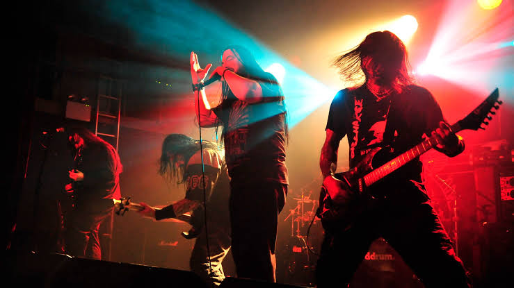
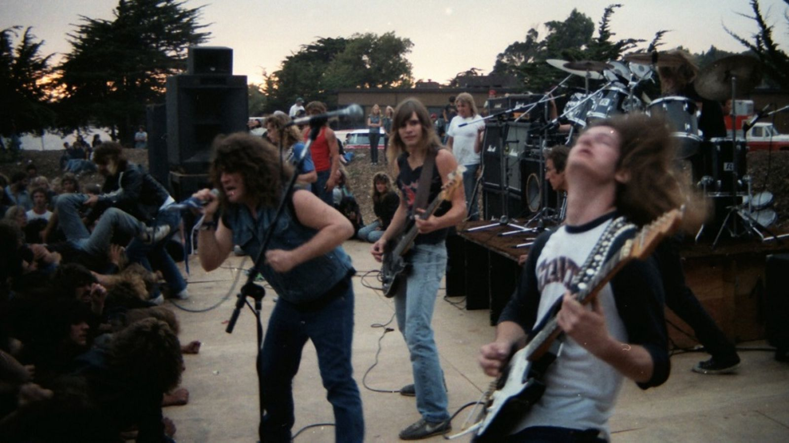

Overview
Thrash metal (or simply thrash) is an extreme subgenre of heavy metal music characterized by its overall aggression and fast tempo. The songs usually use fast percussive beats and low-register guitar riffs, overlaid with shredding-style lead guitar work.
History

The genesis of the genre dates back to the 1970s when early heavy metal, hard rock and punk rock bands released songs that featured traits of what would eventually become thrash metal, speed metal, or both.The thrash metal genre was established from the early-to-mid-1980s, during which musicians began to fuse the double bass drumming and complex guitar stylings of the new wave of British heavy metal (NWOBHM) with the speed and aggression of skate punk, hardcore punk] and speed metal, and the technicality of progressive rock. Philosophically, thrash metal developed as a backlash against both the conservatism of the Reagan era and the much more moderate, pop-influenced, and widely accessible heavy metal subgenre of glam metal which also developed concurrently in the 1980s. Derived genres include crossover thrash, a fusion of thrash metal and hardcore punk.
Characteristics
Thrash metal generally features fast tempos, low-register, complex guitar riffs, high-register guitar solos, and double bass drumming. The rhythm guitar parts are played with heavy distortion, power chords and often palm muted to create a tighter and more precise sound.[31] Vocally, thrash metal can employ anything from melodic singing to shouted or screamed vocals. Most guitar solos are played at high speed and technically demanding, as they are usually characterized by shredding, and use advanced techniques such as sweep picking, legato phrasing, alternate picking, tremolo picking, string skipping, and two-hand tapping.
Gallery
